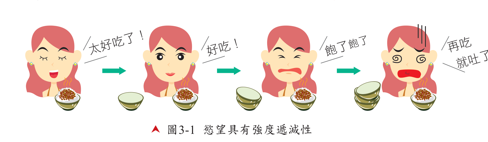
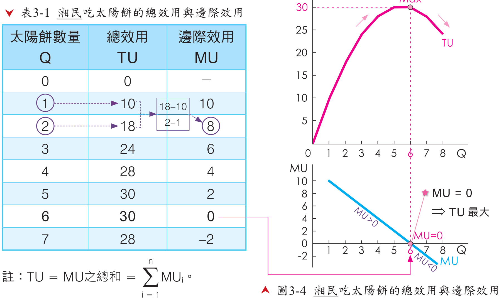
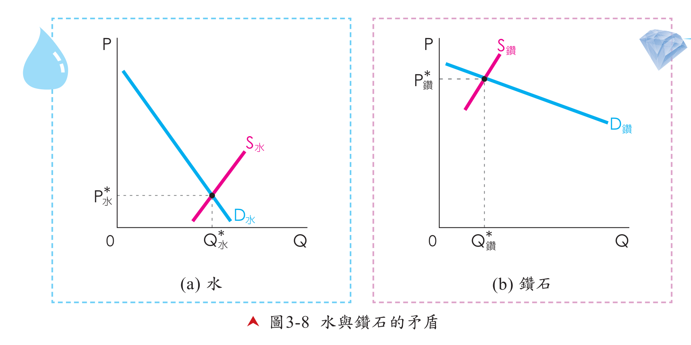
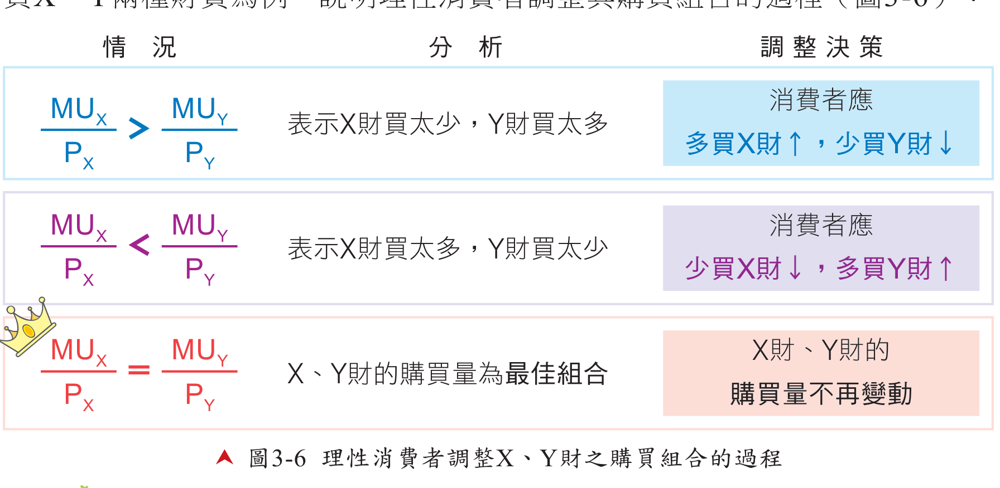
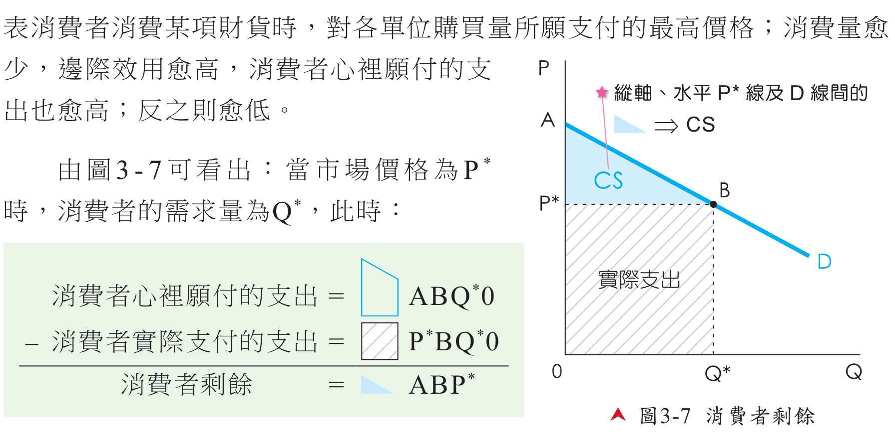

🍎 模組一：慾望的意義、特性與消費種類
課本 3-1 節 ｜ 一切經濟活動的起源
✨ 慾望（Wants）的本質：
人類因生理或心理感到「欠缺的感覺」，進而產生「想要的意願」。慾望是心理現象，也是一切經濟活動與消費行為的源頭！
人類因生理或心理感到「欠缺的感覺」，進而產生「想要的意願」。慾望是心理現象，也是一切經濟活動與消費行為的源頭！
1. 慾望的七大特性（課本 3-1-1 節 P.2～3 統測高頻考點）：
- ① 種類無限性： 舊慾望滿足後，新慾望又不斷產生，人心無止境（買了名牌包又想買鑽石）。
- ② 強度遞減性： 在一定時間內連續消費某財貨，慾望強度隨滿足程度增加而遞減（連吃幾碗魯肉飯，第4碗就飽了）。此特性提醒我們何時該停止消費！
- ③ 原發性與續發性：
• 原發性慾望： 維持生命生存最根本的生理慾望（如渴了要喝水、飢餓要吃飯、冷了要穿衣）。
• 續發性慾望： 隨社會文明演進或心理刺激而衍生的次生慾望（如喝水要喝氣泡水、吃飯要吃米其林大餐、穿衣要穿名牌時尚款）。 - ④ 再生性（習慣性）： 慾望滿足後，隔了一段時間又會重複週而復始產生（一日三餐、每日喝咖啡、早起讀報）。
- ⑤ 多樣性： 慾望種類繁多，各人生理、心理、年齡不同，所產生的慾望亦多元歧異。
- ⑥ 替代性（競爭性）： 滿足某種慾望可以用不同財貨相互替代（口渴沒茶喝改喝礦泉水；返鄉高鐵替代客運；牛肉替代豬肉）。
- ⑦ 互補性（連帶性）： 滿足某種慾望必須兩種或兩種以上財貨相互搭配（膠囊咖啡機＋咖啡膠囊；紅茶＋方糖；相機＋記憶卡）。

▲ 教科書 P.2 圖 3-1：慾望具有強度遞減性（魯肉飯第4碗停止消費）

▲ 教科書 P.5 圖 3-3：欠缺感 ➔ 慾望 ➔ 需求 ➔ 消費 ➔ 效用
2. 消費的種類（課本 P.3～4 直接消費 vs 生產消費）：
| 消費類型 | 別稱 | 定義與說明 | 代表實例（課本原例） |
|---|---|---|---|
| 直接消費 | 最終消費 | 直接利用財貨滿足人類最終生活慾望的行為。 | 媽媽買鬆餅給小孩吃、個人買外套禦寒、吃拉麵填飽肚子。 |
| 生產消費 | 引申消費 / 間接消費 | 使用生產要素或中間財，目的在投入生產過程以製造新財貨。 | 阿霞想在網路上賣手工蔥油餅，到菜市場購買三星蔥作為原料。 |
3. 消費財的四大種類（課本 3-1-2 節 P.4 依購買習慣分類）：
| 財貨種類 | 定義與購買特性 | 需求價格彈性 | 代表實例 |
|---|---|---|---|
| 必需品 | 維持生命與日常生活基本運作不可或缺之物，購買頻率高。 | 彈性最小（Ed ＜ 1） | 白米、食用鹽、自來水、自來瓦斯。 |
| 便利品 | 消費者經常購買、就近在超商購買、花費最少搜尋時間與精力的商品。 | 彈性中等偏小 | 超商飲料、口香糖、報紙、衛生紙、打火機。 |
| 選購品 | 消費者在購買前會多方奔走、仔細比較品質、造型、價格與售後服務的商品。 | 彈性較大（Ed ＞ 1） | 流行服飾、智慧型手機、筆電、家具、家庭劇院。 |
| 特殊品 | 具備獨特品牌魅力、稀有性或專業信譽，消費者願專程前往特定地點購買之物。 | 富人彈性小/高價 | 勞力士名表、名家古董畫作、百萬超跑、高級手工定製婚紗。 |
📈 模組二：效用衡量、邊際效用遞減律 ＆ 水與鑽石的矛盾
課本 3-2 節 ｜ 計數效用分析核心
📐 邊際效用（Marginal Utility, MU）定義：
每增加一單位財貨的消費，所引起的「總效用變動量」：
每增加一單位財貨的消費，所引起的「總效用變動量」：
MU ＝
總效用變動量 (ΔTU)消費量變動量 (ΔQ)

▲ 教科書 P.103 圖 3-4 ＆ 表 3-1：湘民吃太陽餅的總效用 TU 與邊際效用 MU
1. 邊際效用遞減律（Law of Diminishing Marginal Utility）：
- 在一定時間內，連續消費某種財貨，隨消費量增加，每增加一單位所帶來的邊際效用（滿足感增量）必然持續遞減。
2. 總效用（TU）與邊際效用（MU）三大黃金連動（統測必考題！）：
| 邊際效用（MU）狀態 | 總效用（TU）走勢 | 代表意義與決策 |
|---|---|---|
| MU ＞ 0（正數） | TU 遞增（持續上升） | 多吃一單位仍覺得開心，滿足感繼續累積。 |
| MU ＝ 0（零） | TU 達到最大值！（最高峰） | 滿足感達到飽和，此時為最佳消費量（應停止消費）！ |
| MU ＜ 0（負數） | TU 開始遞減（下降） | 吃撐反胃，產生負效用（Disutility），總滿足感縮水。 |
3. 價值的矛盾（Paradox of Value）：水與鑽石的矛盾

▲ 教科書 P.122 圖 3-8：水與鑽石的價量關係與矛盾解密
💎 亞當斯密提出的世紀之謎：
水是生命不可或缺的必需品，用途極多，但市價卻極低；鑽石對生存可有可無，用途極少，但市價卻極為昂貴！
水是生命不可或缺的必需品，用途極多，但市價卻極低；鑽石對生存可有可無，用途極少，但市價卻極為昂貴！
- 邊際學派解答： 財貨的市場價格不是由「總效用 TU」決定，而是由「邊際效用 MU」決定！
- 水的特性： 儲存量豐富、消費量極大 ➔ 處於邊際效用遞減的末端 ➔ 總效用 TU 極大，但邊際效用 MU 極小 ➔ 價格極低！
- 鑽石的特性： 產量稀少、消費量極小 ➔ 處於邊際效用遞減的開端 ➔ 總效用 TU 雖小，但邊際效用 MU 極大 ➔ 價格極昂貴！
⚖️ 模組三：消費者最大滿足決策 ＆ 需求曲線之推導
課本 3-3 節 ｜ 統測經典計算考點1. 理性消費者的兩大情境抉擇：
- 情境 A：財貨為「自由財」（免付費，如喝免費水）：
消費者會持續消費直到 MU ＝ 0 為止，此時總效用達到最大！ - 情境 B：財貨為「經濟財」（考慮價格與有限所得）：
消費者面臨有限所得限制，必須追求「每花費一塊錢所獲得的邊際效用處處相等」！
📐 邊際效用均等法則（消費者均衡條件）：
MUXPX ＝
MUYPY ＝ MUM（貨幣的邊際效用）
預算限制式： PX·X ＋ PY·Y ＝ 所得 M
- 未達均衡時的理性調整原則：
• 若 MUX / PX ＞ MUY / PY ➔ 花在 X 財更划算 ➔ 多買 X、少買 Y ➔ 隨消費增加，MUX 下降，直到相等為止！

▲ 教科書 P.108 圖 3-6：理性消費者調整 X、Y 財購買組合之動態過程
📉 如何從消費者均衡導出「需求曲線」？
由 MUX / PX ＝ MUM 移項可得：
這直接證明了：需求曲線必然呈現向右下方傾斜（負斜率）！
由 MUX / PX ＝ MUM 移項可得：
PX ＝
MUXMUM
當消費量 X 增加時，根據邊際效用遞減律，MUX 逐漸下降，因此消費者每多消費一單位所願意支付的最高價格 PX 也隨之下降！這直接證明了：需求曲線必然呈現向右下方傾斜（負斜率）！
🍰 模組四：消費者剩餘、家庭消費定律（恩格爾法則） ＆ 消費者主權
課本 3-4～3-6 節
▲ 教科書 P.113 圖 3-7：需求曲線下方與市價上方為消費者剩餘（CS）
1. 消費者剩餘（Consumer's Surplus, CS）：
📐 消費者剩餘定義（馬歇爾 Alfred Marshall 提出）：
消費者願意支付的最高總金額 － 實際支付的市場總金額：
消費者願意支付的最高總金額 － 實際支付的市場總金額：
CS ＝ 願意支付總額 － 實際支付總額
- 幾何圖形： 落在「需求曲線下方」且在「市場價格線上方」之三角形面積。
- 市價變動影響： 當市場價格下降時，消費者剩餘（福利）擴大；市價上升時，消費者剩餘縮水。
2. 家庭消費定律（恩格爾法則 Engel's Law）
📊 恩格爾係數（Engel's Coefficient）：
恩格爾係數 ＝
糧食（食物）支出總額家庭總消費支出（或總所得）
| 項目類別 | 家庭所得提高時的支出變化 | 佔家庭總支出之比例變動 |
|---|---|---|
| 糧食（食物）支出 | 金額增加 | 比例反而下降（恩格爾法則核心） |
| 衣著、居住、燃料支出 | 金額增加 | 比例大體保持不變 |
| 教育、娛樂、文化醫療 | 金額大幅增加 | 比例明顯大幅上升 |
💡 生活水準指標： 恩格爾係數「愈低」，代表家庭不用把所得全耗在溫飽上，能將更多錢用於精神文化生活，表示該國或該家庭生活水準愈高、愈富裕！
3. 消費者主權 ＆ 台灣《消費者保護法》（課本 3-6 節 P.19）
- 消費者主權（Consumer Sovereignty）： 在自由競爭市場中，消費者透過「貨幣選票（買與不買）」來決定廠商生產什麼、生產多少，消費者如同市場的最高主權者。
- 美國甘迺迪總統（J. F. Kennedy）1962 年提出之消費者四大權利：
① 求安全的權利： 商品與服務不可危害消費者生命、身體、健康或財產。
② 求知的權利： 充分揭露商品成份、有效期限、製造商與產地等標籤資訊。
③ 選擇的權利： 反對獨占與勾結，確保市場有充分競爭可供自由選擇。
④ 表達意見的權利： 消費者有申訴投訴之管道，主管機關與企業應重視回饋。 - 台灣《消費者保護法》（消保法）實戰重要規範（課本 P.19）：
• 七天猶豫期（鑑賞期）： 通訊交易（網路購物、電視購物、型錄郵購）或訪問交易之消費者，在收到商品後 7 日內得無條件解除契約退款，無須說明任何理由，亦不需負擔任何運費或手續費。
• 企業經營者之「無過失責任」： 企業所提供之商品或服務若欠缺安全性致生損害於消費者，縱使企業證明其無故意或過失，仍應對消費者負連帶賠償責任！
• 定型化契約規範： 排除顯失公平之條款，保障弱勢消費者權益。
🎯 模組五：CH3 課本精選 5 大經典實戰測驗
課本 P.117～120 原題驗證1. 【課本 P.117 第 3 題】霍爾每天早上一定要喝紅茶，而且一定要加二顆方糖。請問對霍爾而言，此種情況屬於慾望的哪兩種特性？
🎉 答對了！選 (D)
「每天早上一定要喝」具有周而復始、定期產生的特性，屬於習慣性（再生性）；「喝紅茶一定要加方糖」兩者必須相互搭配才能滿足慾望，屬於互補性（連帶性）！
「每天早上一定要喝」具有周而復始、定期產生的特性，屬於習慣性（再生性）；「喝紅茶一定要加方糖」兩者必須相互搭配才能滿足慾望，屬於互補性（連帶性）！
2. 【課本 P.117 第 7 題】水的用途比鑽石多，且是生存不可或缺之物，但水的價格卻遠比鑽石低，是因為水的：
🎉 答對了！選 (C)
財貨的市場價格不是由總效用決定，而是由「最後一單位的邊際效用 MU」決定。水的儲藏量豐富且消費量大，其最後一單位的 MU 極小，故市價便宜；反之鑽石稀少，最後一單位的 MU 極大，故價格昂貴！
財貨的市場價格不是由總效用決定，而是由「最後一單位的邊際效用 MU」決定。水的儲藏量豐富且消費量大，其最後一單位的 MU 極小，故市價便宜；反之鑽石稀少，最後一單位的 MU 極大，故價格昂貴！
3. 【課本 P.119 生活情境第 2 題】花太太是位追求總效用極大的麻糬愛好者，其吃麻糬的邊際效用如下表（第1~7顆的 MU 分別為：15, 10, 8, 5, 2, 0, -10）。在不考慮麻糬價格（免費享用）的情況下，花太太最多會吃幾顆？
🎉 答對了！選 (C)
在不必付費的情況下，只要 MU ＞ 0，多吃一顆總效用 TU 就會增加；吃到第 6 顆時 MU ＝ 0，此時總效用達到最大值（TU ＝ 15+10+8+5+2+0 ＝ 40）。若再吃第 7 顆，MU 為 -10（負效用），總效用反而下滑至 30！故花太太最多會吃 6 顆。
在不必付費的情況下，只要 MU ＞ 0，多吃一顆總效用 TU 就會增加；吃到第 6 顆時 MU ＝ 0，此時總效用達到最大值（TU ＝ 15+10+8+5+2+0 ＝ 40）。若再吃第 7 顆，MU 為 -10（負效用），總效用反而下滑至 30！故花太太最多會吃 6 顆。
4. 【課本 P.119 第 3 題】已知采潔對 A 財的邊際效用為 50，對 B 財的邊際效用為 25。若 A 財的價格為 10 元，請根據「邊際效用均等法則」，判斷在總效用最大的情況下，B 財的價格應為多少元？
🎉 答對了！選 (C)
根據消費者均衡條件：MUA / PA ＝ MUB / PB
帶入數值：50 / 10 ＝ 25 / PB ➔ 5 ＝ 25 / PB ➔ PB ＝ 5 元！
根據消費者均衡條件：MUA / PA ＝ MUB / PB
帶入數值：50 / 10 ＝ 25 / PB ➔ 5 ＝ 25 / PB ➔ PB ＝ 5 元！
5. 【課本 P.119 第 4 題】旺伯對花捲的需求如下：買第 1 個願付 20 元、第 2 個願付 18 元、第 3 個願付 15 元、第 4 個願付 11 元、第 5 個願付 6 元。請問當花捲的市價為 15 元時，旺伯購買 3 個花捲的消費者剩餘（CS）為多少元？
🎉 答對了！選 (B)
• 旺伯購買 3 個花捲的願付總額 ＝ 20 ＋ 18 ＋ 15 ＝ 53 元。
• 旺伯的實際支付總額 ＝ 市價 15 元 × 3 個 ＝ 45 元。
• 消費者剩餘 CS ＝ 願付總額 53 元 － 實付總額 45 元 ＝ 8 元！
（也可以逐個計算剩餘加總：(20-15) + (18-15) + (15-15) = 5 + 3 + 0 = 8 元）
• 旺伯購買 3 個花捲的願付總額 ＝ 20 ＋ 18 ＋ 15 ＝ 53 元。
• 旺伯的實際支付總額 ＝ 市價 15 元 × 3 個 ＝ 45 元。
• 消費者剩餘 CS ＝ 願付總額 53 元 － 實付總額 45 元 ＝ 8 元！
（也可以逐個計算剩餘加總：(20-15) + (18-15) + (15-15) = 5 + 3 + 0 = 8 元）